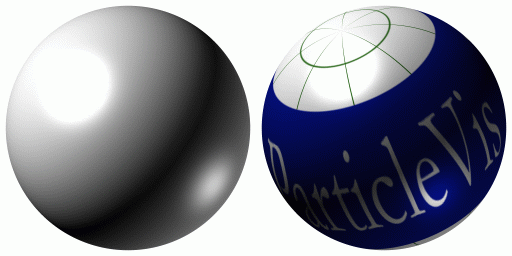
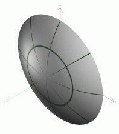
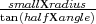
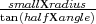

|
Representing the state of a discrete particle simulation at a point in time is straightforward: the centerpoint of each particle is specified in space. The orientation of the particle may also be specified in the form of a quaternion or a set of Euler angles. In ParticleVis, each frame of data is represented as a list of these states, and a state file is used for storage of the frames.
This format is an effictive way to store simulation data, but the problem of specifying the actual geometric shape of each particle remains. In order to maximize the flexibility of the visualization system, a human-readable markup file format was devised to describe the geometry of a set of particles associated with a state file. The Extensible Markup Language (XML) provided the basis for this format. While the XML data is not rigorously validated, an existing XML parser can be used to easily process the input file. The vocabulary is designed to be simple and easily modified or generated by end-users.
The format, referred to as an XML geometry descriptor, is designed to match the implicit ordering of particles in a statefile. The markup format of XML is well-suited to a hierarchy of particle attributes. Each piece of information in the XML file is delimited by a set of markup tags of the form <tag> ... </tag> . The top-level tag of the vocabulary is the <particleset> , and individual particle attributes are represented by <particle> tags.
The hierarchy of tags is structured as shown above. The the top level tag contains a number of particle tags that enclose a series of geometric primitives. Each particle has various attributes that can be passed in to modify its appearance. Each primitive can be transformed in the local object space of the particle. At load time, the XML parser will process each particle, generate OpenGL commands to render the specified geometry, and assign the representation to the appropriate particle. The position and orientation of the loaded particle data is used as the origin and orientation of the specified geometry.
The mapping from XML to the statefile is as shown in Table 1. The correspondence from particle tags to statefile ID numbers is either one-to-one or one-to-many. Each new <particle> is mapped onto a loaded statefile in-order. The last particle description in the file automatically applies to all remaining statefile ID’s. Thus, if only one <particle> tag is present, it applies to the entire set of particles. The “count” attribute may also create a one-to-many map to particle IDs.
|
A set of optional attributes may be inserted into the enclosing braces of any particle tag. This insertion takes the form <particle [tag1="data"] [tag2="data"] ... > for an arbitrary number of attribute tags. The attributes and their effects are listed in Table 2. For example, an XML particle tag might take the form:
<particle notransparent="false" inverted="true" r="0" g="1" b="0">
This tag specifies a particle that is green, always opaque, and “inverted” for a cutaway view on its interior. Note that the attributes are enclosed in double quotes (single quotes are also permissible). The data-types of integer and float map real numbers to parameters. The boolean type maps the strings “true” or “false” to a logical state.
Of particular note is the “count” attribute, which affects the mapping of descriptors to statefile ID’s. Thus a particle tag of the form <particle count="5000"> will map the same specified geometry to the next 5000 lines of statefile input. Table 3 portrays an example use of the count attribute. Since particle states are commonly grouped by type, this attribute allows the compact specification of several particle categories that correspond to the input file.
|
|
A number of geometric primitives are available for use in specifying particle shape. The objects are spheres, spherical caps, cylinders, cones, points, lines, and quadrilaterals (plates). A set of these primitives is issued within each particle tag to describe its appearance. Each primitive has a variety of parameters that determine its size and shape, and each primitive may be transformed with regard to position and orientation. Two secondary primitive tags, file and objfile , allow file input to be used for particle geometry.
Within any primitive, it is possible to specify an affine transformation involving a rotation followed by a translation. This operation will transform the unit geometry into the object space of the particle. The tags that perform this transformation are <position> and <orientation> . The position tag accepts an x/y/z input, in the form “<position> <x>x-pos</x> <y>y-pos</y> <z>z-pos</z></position> .” The orientation tag accepts input in two forms: that of Euler angles, using eta/xi/lamdba, or as a quaternion, specified in the form q0 q1 q2 q3. The format with Euler angles uses the <eta> , <xi> , and <lambda> tags. The Euler angles are given in radians, and denote a series of rotations: first around the X axis, then around Y, and then around Z. The quaternion orientation format uses the <q0> , <q1> , <q2> , and <q3> tags. Both orientation types are portrayed in Table 4. By applying these transformations to the primitive tags, an arbitrary arrangement of shapes may be specified.
|
|
 <sphere>
|
The simplest primitive is the sphere, shown in Figure 1. It has only a single parameter: <radius> . By using the <position> tag the sphere can be centered anywhere in the object space. Rotation tags have no effect on the generated sphere geometry. If a radius of 0 is specified, a point will be rendered instead of a polygonal sphere. A ‘pure’ sphere primitive (alone within a <particle> ) is able to be rendered using programmable shaders, which provide enhancements to performance and visual fidelity.
The cap, shown in Figure 2, specifies a parameterized spherical cap that lies somewhere between a
flat disc and a hemisphere. The parameters for the cap, which lies on the XY plane, are the
<radius>
and <height>
. The <radius>
is the radius of the outer edge of the cap, and the <height>
is the ‘thickness’ of the cap, or the distance from the origin to the highest point on the spherical cap,
(0, 0,height). When <height>
=0 the geometry becomes a disc. When <height>
is positive the cap becomes a truncated sphere, where the radius of curvature of the cap is
 . When height > radius no valid spherical cap exists and the cap geometry is undefined.
. When height > radius no valid spherical cap exists and the cap geometry is undefined.
|
 <cap>
|
A cylinder tag specifies a cylindrical surface, shown in Figure 3. The tag has two parameters: <radius> and <length> . The radius corresponds to the radius of the cylinder base, which lies on the object space XY plane. The length corresponds to the height of the cylinder in the Z direction. This cylinder is centered on the origin, extending out equally along the Z axis in both directions.
|
<cylinder>
|
A cone takes three parameters: a <small_radius>
, a <large_radius>
, and a <half_angle>
. A cone tag can represent a regular cone, a truncated cone, but not a cylinder (the two radii must not be
equal). If small_radius = 0, the apex of the cone always lies directly on the object space origin, and the
axis extends along the position Z direction. A cone with a small radius of zero is shown in Figure 4. The
two radius tags correspond to the radii of the smaller (small_radius) and larger (large_radius) conical
bases, which both lie on the XY plane. The half_angle tag specifies the angle formed between the top
edge of the cone and the Z axis. A regular cone that tapers to a point is generated when the
<small_radius>
is specified as 0. A truncated cone is generated whenever <small_radius>
is greater than 0. In both cases the half angle of the cone combined with the large radius always
determines the ‘height’ of the cone. If the half angle and large radius remain the same, the effect of
increasing the small radius will be to truncate the upper portion of the cone, shown in Figure 5. The axial
position of the cone’s larger base is thus (0, 0, ) and the axial position of the smaller base is
(0, 0,).
) and the axial position of the smaller base is
(0, 0,).
|
<cone>
|
A plate is used to specify a quadrilateral. The four parameters are the four corners of the quad, and each point is given directly in object space. The form is <cornerN> <x>x-val</x> <y>y-val</y> <z>z-val</z> </cornerN> , for N = 1, 2, 3, 4. While this plate will generally be planar, it is actually rendered as a pair of triangles: one from the loop 1 - 2 - 4, and one from 2 - 3 - 4. A series of plates could theoretically be combined to form any arbitrary geometry, but the file and object-file tags are better suited for this purpose.
A line adds a single line segment to the particle geometry. This line is specified much like the plate object, as the parameters are <corner1> and <corner2> , and the XYZ positions are directly used to form the line’s endpoints in object space.
In order to specify an arbitrary geometry, an ASCII text file specifying triangles (in object space) can be loaded into the geometry engine using the <file> tag. The file specifies a set of points and surface normals, every three of which compose a single triangle. The normals are specified at each vertex for the purpose of lighting calculations. The <filename> parameter within the primitive descriptor is a string that points to the triangle file (relative to the path of the XML file itself). As per usual, transformation tags may be used to displace the geometry.
|
|
The format of triangle files, shown in Figure 6, is extremely simple. The intent of this design is to allow an external script to easily generate triangle assemblies: little regard is given to space efficiency. Each line of the file is composed of six decimal values separated by whitespace. The first three values specify the location of the vertex in object space, and the next three specify the surface normal at that point. Every three lines of the ASCII triangle file is parsed into a single triangle in object space. The set of triangles may be disjoint, and there is no way to specify texture coordinates or colors. The functionality of the file primitive is largely superseceded by the OBJFile primitive, and use of OBJ files is recommended.
Like the <file> tag, the <objfile> geometry descriptor inserts an arbitrary collection of triangles into the particle representation. The format for the objfile, however, is a subset of the Wavefront OBJ file format, which is commonly supported by CAD packages. The OBJ file parser is only capable of recognizing the simplest OBJ files, which contains only vertices, normals, and texture coordinates.
The OBJ files are ASCII text, and contain lists of vertices, normals, texture coordinates, and faces. The basic structure of an OBJ file is a series of tagged lines with a single piece of data on each line. The delimiter on each line is whitespace. The recognized tags in ParticleVis are ‘v’ for vertex (an xyz value), ‘vn’ for vertex (surface) normal (also xyz), ‘vt’ for texture coordinates (two dimensional), and ‘f’ for face. The lists of vertices, normals, and texture coordinates are parsed in-order and are given an implicit ID corresponding to their order in the file, starting at 1. The format of the ‘f’ face tags then specifies lists of (three) indices: a vertex, an optional normal, and an optional texture coordinate. These indices are delimited by forward slashes (/), as 1, 2, or 3 indices may be issued per point. Faces should be specified in clockwise order. See Figure 7 for a simple example file.
While the geometry tags can be placed within <particle> tags in any combination to render particle themselves, often it is useful to have a set of geometry that is unmoving and is not tied to any particle state. The <static> tag is directly analogous to the <particle> tag, except that it specifies a set of geometry that simply remains at rest within the environment. The <static> tag is enclosed by the outer <particleset> , and only one will be is parsed for each set. Any combination of geometric primitives in any position can be placed inside it. Since it sits at the origin without rotation, the object space of the static geometry is the same as the world space.
Since an XML descriptor generally corresponds to a single dataset or single class of data, it is often desirable to encode scene or viewpoint parameters into the descriptor. The <scene> tag, enclosed in the <particleset> , allows particle and camera parameters to be passed into the rendering engine.
A single <scene> tag may contain a block of scene descriptors. These tags describe camera position and projection, marked particles, axes options, and vector scaling parameters.
Many features in the XML language have evolved in response to specific abilities found in the ParticleVis renderer, and as such they are difficult to classify. Two are worth noting: the ability to control the surface orientation of “inverted” primitives, and the ability to specify per-particle scalar data in the form of “surface maps.”
The tag <flipsurface> sits at the same level as geometric primitives: it can be included within a ‘particle’ or ‘static’ tag. By enclosing one or more primitive inside a <flipsurface> ... </flipsurface> pair, the “inverted” particle attribute may be reversed. This tag only applies when “inverted” has been set to true. By using this pair of tags to enclose primitives, a solid can be constructed from a combination of front and back faces. For example, if a cutway shell were desired, but interior objects such as spheres or cones were to be represented normally, the interior primitives could be enclosed in a <flipsurface> (with inversion enabled) and the desired effect could be achieved.
Finally, the <particleset> tag supports two attributes as well. In order to specify a set that has surface-map data applied to it, a tag of the form <particleset map_filename="mapname" map_resolution="resolution"> is passed. This instructs the parser to load surface map data from the file “mapname” of resolution × resolution points across the surface of each spherical particle.
In this section a series of examples that demonstrate the features of the XML geometry language are presented.
|
The first example in Figure 8 represents a minimal descriptor that assigns all loaded particles a sphere of radius 1. No attributes or additional geometry is specified.
|
In Figure 9 a set of 1000 red spheres and 1000 green spheres are specified, all with radius 1. The red spheres have texturing disabled, and the green spheres are two geometry quality levels higher than normal. The specification of count="1000" in the green sphere set is actually unnecessary, as the spheres will map to all remaining particles (N - 1000).
A more complex example that involves cylinders, caps, and geometric transformations is shown in Figure 10. The product of this descriptor is a convex solid, a cylinder with capped ends (or a biconvex tablet). The <orientation> tag and <position> tags are used together to flip the second cap (π radians about the X axis) and position it directly on the cylinder’s end. The resulting geometry is shown in Figure 11.
In Figure 12 a cylindrical drum (first particle) and two baffles are defined. The drum is inverted, so that when rendered the back faces will be shown instead of the front. This effect results in a cutaway view that will allow the interior of the object to be shown. The geometry quality has also been elevated. The cylindrical drum solid is formed from a cylinder and two truncated cones. The two baffles are simply plates with appropriate sizes. Setting ‘textures’ to false means that the plates will not be textured (when texturing is enabled in the renderer).
|
|